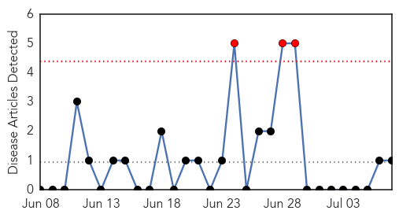
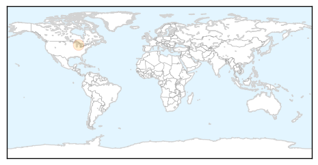
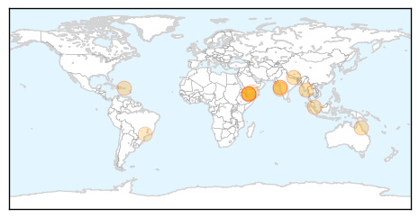

Pertussis
30-Day Web Trend
3 alerts, 0 warnings

30-Day Twitter Trend
0 alerts, 0 warnings

Article Locations
Article Confidences

Top Articles:
Top Tweets:
-
No tweets found for Jul 07, 2015
Dengue Fever
30-Day Web Trend
6 alerts, 8 warnings

30-Day Twitter Trend
3 alerts, 0 warnings

Article Locations
Article Confidences

Top Articles:
- 0.970
- At ground zero in Yangon’s dengue fever epidemic
- 0.933
- The Kathmandu Post
- 0.882
- International mosquito experts meet in Far North to beat dengue
- 0.859
- Viral Strains in Warm Countries, and How It Shifts
- 0.840
- Selangor up against too many setbacks - Nation
- 0.833
- Study explains how dengue virus adapts as it travels, increasing chances for outbreaks
- 0.822
- Contaminated Flood Water In Mumbai Claims Two Lives
- 0.795
- Leptospirosis disease kills 2 persons this month
- 0.738
- Leptospirosis disease kills 2 persons this month
- 0.724
- Aden's overwhelmed hospitals turn into hospices as bloodshed rages on
- 0.720
- 'The world is watching us slowly die': Hospitals turn into hospices in the Yemeni city of Aden
- 0.713
- Transgenic mosquito works to control dengue-carrying mosquitos
- 0.677
- Aden's overwhelmed hospitals turn into hospices
- 0.657
- Yemen: Aden's overwhelmed hospitals turn into hospices
- 0.599
- Aden’s overwhelmed hospitals turn into hospices
- 0.531
- Aden's overwhelmed hospitals turn into hospices
Top Tweets:
-
No tweets found for Jul 07, 2015